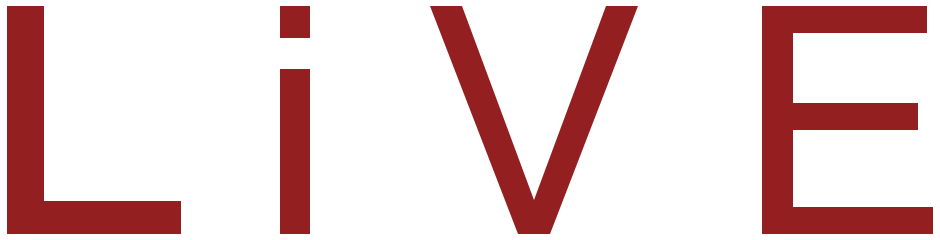
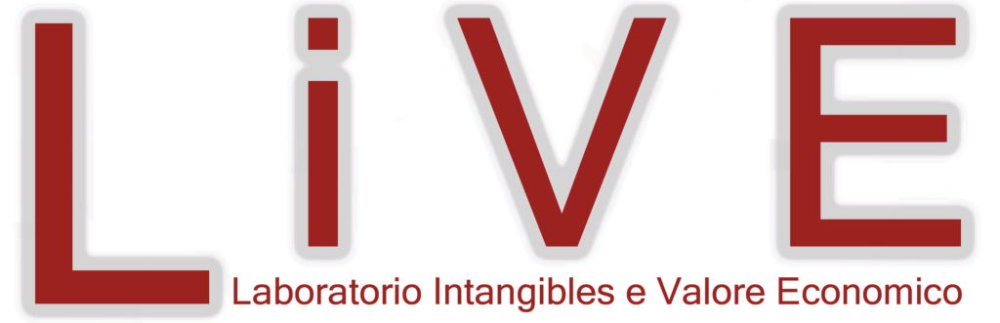
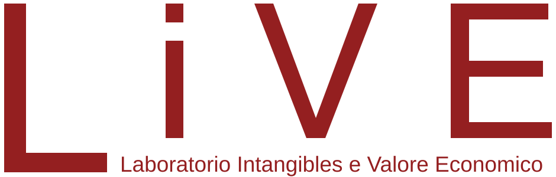

Design system · v1.0 · 2026
Il sistema visivo di LiVE
Regole, componenti e risorse per comunicare LiVE in modo coerente: autorevole come una società di consulenza internazionale, riconoscibile nel suo rosso.
01 · Principi
Rigore accademico, linguaggio d’impresa
Il sistema traduce in forma visiva il posizionamento di LiVE: ricerca applicata al servizio delle decisioni. Ogni scelta grafica deve rendere più chiaro un contenuto, non decorarlo.
Autorevole
Titoli in serif editoriale, molto spazio bianco, gerarchie nette. Lo stile di una pubblicazione, non di una brochure.
Chiaro
Un messaggio per sezione. Frasi brevi, numeri in evidenza, diagrammi che spiegano un meccanismo.
Riconoscibile
Il rosso LiVE è un accento, non uno sfondo continuo: segnala ciò che conta. L’inchiostro dà profondità.
Vivo
Grafiche generative (onde, particelle, reti) evocano dati e intangibili in movimento, sempre con discrezione.
02 · Logo
Il marchio
Il logotipo è stato ridisegnato in vettoriale mantenendo la geometria originale delle lettere L·i·V·E e il payoff «Laboratorio Intangibles e Valore Economico». L’alone grigio della versione precedente è stato eliminato per una resa nitida a ogni dimensione.



Area di rispetto e dimensioni minime

- L’area di rispetto x è pari all’altezza della «i» minuscola: nessun elemento deve entrarvi.
- Larghezza minima del logo con payoff: 120 px a schermo, 30 mm in stampa.
- Sotto queste misure usare il logotipo senza payoff; sotto i 32 px usare il monogramma.
- Su fondi scuri o rossi il logo è sempre bianco; su fondi chiari rosso con payoff rosso o inchiostro.
Usi da evitare
Rosso su inchiostro: contrasto insufficiente (1,9:1).
Non deformare né comprimere le proporzioni.
Non cambiare colore né aggiungere ombre o contorni.
Non posizionare su sfondi complessi senza un fondo pieno.


03 · Colore
Una palette essenziale
Quattro colori di base, derivati dal marchio e dal company profile. Il rosso è l’accento distintivo; inchiostro e ardesia costruiscono la struttura; bianco e grigi danno respiro.
Logo, pulsanti principali, accenti, numeri chiave.
Testo, sezioni scure, header e footer.
Testo secondario, didascalie, grafici.
Filetti, bordi, serie secondarie nei grafici.
Scale tonali
#2A0A0B
#4A1011
#6E1718
#941F20
#A92A2A
#C23B37
#E66B63
#F3B3AC
#F6E3E2
#FBF2F1
#0B1116
#17222B
#202A32
#2E3A44
#59666F
#66727A
#9AA4AA
#CAD0D2
#DEE2E3
#F6F7F7
Proporzioni d’uso
Accessibilità (WCAG 2.2)
| Combinazione | Esempio | Contrasto | Esito |
|---|---|---|---|
| Bianco su Rosso LiVE | Contattaci | 8,5:1 | AAA |
| Bianco su Inchiostro | Testo | 16,2:1 | AAA |
| Rosso LiVE su bianco | Approfondisci | 8,5:1 | AAA |
| Ardesia 600 su bianco | Testo secondario | 5,9:1 | AA |
| Ardesia 500 su bianco | Didascalia | 4,9:1 | AA |
| Rosso 400 su Inchiostro | Accento su scuro | 5,1:1 | AA |
| Rosso LiVE su Inchiostro | Da evitare | 1,9:1 | Non usare per testo |
04 · Tipografia
Due voci: editoriale e funzionale
Un serif contemporaneo per i titoli dà il tono di una pubblicazione autorevole; un grottesco preciso per testi, interfaccia e dati. Entrambi open source (SIL Open Font License) e ospitati direttamente sul sito, senza servizi esterni.
Source Serif 4
Titoli, citazioni, numeri chiave. Pesi 300–600, corsivo per enfasi. Interlinea 1,05–1,2; tracking −2%.
ABCDEFGHIJKLMNOPQRSTUVWXYZ
abcdefghijklmnopqrstuvwxyz 0123456789
Instrument Sans
Testo corrente, interfaccia, etichette, tabelle. Pesi 400–700. Interlinea 1,6 per il testo.
ABCDEFGHIJKLMNOPQRSTUVWXYZ
abcdefghijklmnopqrstuvwxyz 0123456789
Scala tipografica fluida
05 · Griglia e spaziatura
Struttura a 12 colonne, ritmo da 4 px
Contenitore massimo 1320 px, margini fluidi da 16 a 48 px, spazio tra colonne da 16 a 32 px. Le sezioni respirano con un padding verticale da 64 a 144 px.
Scala degli spazi
Forme: angoli vivi (raggio 0) per pulsanti, card e campi; solo chip e filtri sono arrotondati. Le linee sono sottili (1 px) in argento; il filetto rosso da 2–3 px segnala lo stato attivo.
06 · Iconografia
Icone lineari, tratto 1,5 px
Disegnate su griglia 24 × 24, terminali arrotondati, nessun riempimento. Si usano in rosso su chiaro e in rosso 400 su scuro, sempre accompagnate da un’etichetta.
07 · Componenti
Gli elementi dell’interfaccia
Componenti essenziali e riutilizzabili. Gli stati hover usano un riempimento che scorre da sinistra; il focus da tastiera è sempre visibile.
Pulsanti e link
Etichette, filtri, sovratitoli
Card
Card competenza
Al passaggio del mouse si riempie di inchiostro dal basso.
ApprofondisciCard caso
Illustrazione, metadati, titolo serif, testo e output.
Numeri chiave
Campi modulo
08 · Grafiche
Un linguaggio generativo per gli intangibili
Al posto della fotografia stock, illustrazioni astratte generate da codice nei colori del marchio. L’onda rossa del sito precedente diventa la firma visiva, animata e interattiva.
Le illustrazioni statiche si rigenerano con node scripts/gen-art.mjs; le versioni animate rispettano l’impostazione «riduci movimento» del sistema operativo.
09 · Visualizzazione dati
Grafici sobri, un solo accento
Il rosso evidenzia il dato da guardare; tutte le altre serie sono in inchiostro, ardesia o argento. Etichette dirette al posto delle legende, griglie leggere, nessun effetto 3D.
Rosso
Inchiostro
Ardesia
Rosso 400
Argento
10 · Movimento
Movimenti calmi e decisi
Le transizioni accompagnano lo sguardo: elementi che emergono dal basso allo scroll, riempimenti che scorrono, numeri che si contano. Mai rimbalzi, mai movimenti superflui.
| Token | Durata | Uso |
|---|---|---|
| --dur-1 | 160 ms | Colori, sottolineature |
| --dur-2 | 320 ms | Hover, stati dei componenti |
| --dur-3 | 640 ms | Riempimenti, card, pannelli |
| --dur-4 | 1100 ms | Rivelazioni allo scroll, grafici |
Con «riduci movimento» attivo tutte le durate si azzerano e le grafiche animate diventano immagini statiche.
11 · Tono di voce
Parliamo come consulenti, non come venditori
Concreti, misurati, orientati al risultato. Usiamo il «noi» per LiVE e il «voi» per l’impresa; titoli che affermano una tesi, testi che spiegano come.
Sì
«Integriamo le fonti informative aziendali e trasformiamo i dati in indicatori e dashboard fruibili dal management.»
Verbo d’azione, oggetto concreto, beneficio chiaro.
No
«Soluzioni innovative a 360° per il successo straordinario della tua azienda!»
Superlativi vaghi, nessun contenuto verificabile.
Sì
«Tre livelli di supporto coprono decisioni e attuazione.»
Titolo come tesi: si capisce il messaggio anche leggendo solo quello.
No
«I nostri servizi»
Titolo etichetta: non comunica nulla.
12 · Token
Una sola fonte di verità
Tutti i valori sono variabili CSS in assets/css/tokens.css: modificandole si aggiorna l’intero sito. Usare sempre i ruoli semantici nei componenti.
/* Colore — primitivi */ --live-red-700: #941F20; /* Rosso LiVE */ --live-ink-900: #17222B; /* Inchiostro */ --live-slate-600: #59666F; /* Ardesia */ --live-grey-300: #CAD0D2; /* Argento */ /* Colore — ruoli */ --color-text: var(--live-ink-900); --color-text-muted: var(--live-slate-600); --color-accent: var(--live-red-700); --color-accent-on-dark: var(--live-red-400); --color-line: var(--live-grey-200); /* Tipografia */ --font-serif: "Source Serif 4", Georgia, serif; --font-sans: "Instrument Sans", "Helvetica Neue", Arial, sans-serif; --fs-h1: clamp(2.25rem, 1.5rem + 3.4vw, 4.5rem); /* Spazio, forma, movimento */ --space-5: 1.5rem; --container: 1320px; --radius-0: 0; --ease-out: cubic-bezier(0.16, 1, 0.3, 1); --dur-3: 640ms;